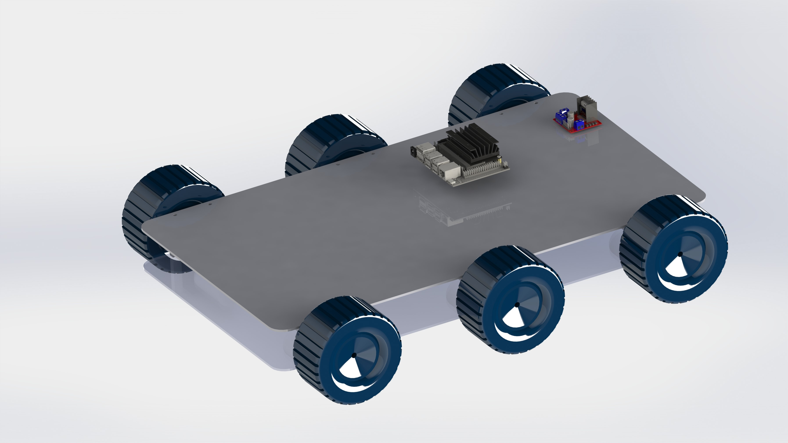

arkadaşlar bilgi paylaşımı olduğunda buradan paylaşılacaktır
| # | Belge Adı | Belge Açıklaması | Belge Linki |
|---|---|---|---|
| 1 | Şartname | Yarışma şartnamesini içermektedir (pdf) | |
| 2 | tarımsal kara aracı word dosyası | Örnek şablon içermektedir (docx) | |
| 3 | Motorlu taşıtlar mekaniği | Araç motoruna gelen yükleri hesaplamak için makale (pdf) |
Haberleşmeyi Pixhawk üzerinden sağlanılacak.pixhawk nedir?Pixhawk hava ve kara araçlarına otonom hareket sağlayan gelişmiş bir otopilot sistemidir.İçerisinde 32 bit işlemci bulunan Pixhawk cihazlar arasındaki haberleşmeyi sağlamaya yardımcı oluyor.İçerisinde spektrum DSM receiver ,radio telemetry,screen telemetry,USB ,SPI(serial peripheal İnterface)bus,power module,safety switch button,buzzer,serial,GPS module,CAN(controller area network)bus,PC splitter or compass module,Analog to Digital converter 6.6V,Analog to digital converter 3.3V,LED indicator pinleri bulunduruyor.SD kart sayesinde sensörün frekans süresini ve uzunluğunu kaydedebiliniyor.Araçta otonom kontrolü bilgisayar üzerinden bağlantıyı da jetson nano üzerine takılacak olan WIFI card ile sağlanılabilecek.
Hub motor:bu motor geleneksel motorların dışında bir çalışma prensibine sahip ortasındaki parça hareketsiz dışındaki parça hareketli çalışır.Bu motoru aracın tekerlerinin hareketini sağlamak için kullanılacak.Kablosuz modellerdir.hub motorlar elektrikli motorsikletlerde elektrikli bisikletlerde yaygın şekilde kullanılır.Hub motorlar Bazı otobüslerde de kullanıldığı görülür.Geleneksel araba dizaynına karşın bu motorlarda her tekerin tek başına hareket etmektedir.kolay uygulanabilir ve çevre dostu bir çözüm olduğundan dolayı Araçta bu motor kullanılmasını ön görüldü.
Kendinden redüktörlüdür yani motordan aldığı dönüşü belli oranda düşüren şanzıman gibi düşünülebilir.Bu tür redüktörler yapısı gereği sadece motor döndüğünde dönebilir ve devirleri düşüktür.araçta bu motor kullanılamaz çünkü yavaş çalışıyor ve sonsuz dişli yapısında çalıştığı için araç rahat bir şekilde hareket edemeyecek.
Bu tür motorlar yüksek hızlarda çalışan ve yaklaşık 7000 devir/dk.bu motor deviri uygun devir seviyesine kadar azaltabilirse aracın engel,çukur ve eğimli arazilerde rahat bir şekilde kullanılabilir.